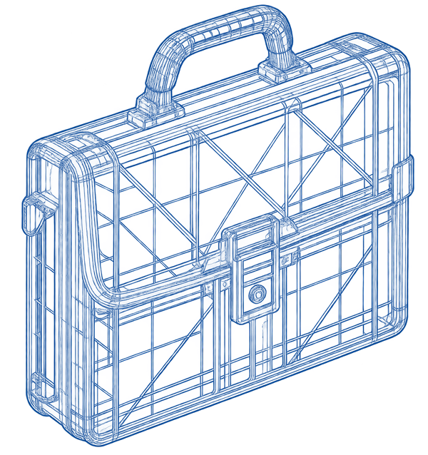

operatori di data entry
Nel data entry, l’IA permette di velocizzare l’inserimento dei dati, riducendo costi ed errori e limitando sempre di più il bisogno dell’intervento umano.
Come l’innovazione tecnologica sta trasformando il mercato del lavoro e le professioni tradizionali

Nel data entry, l’IA permette di velocizzare l’inserimento dei dati, riducendo costi ed errori e limitando sempre di più il bisogno dell’intervento umano.
Nel settore delle chiamate a freddo, l’IA gestisce automaticamente le comunicazioni più semplici, mentre le persone si occupano dei contatti più complessi e importanti.
Le casse stanno cambiando grazie all’IA, che rende automatici pagamenti e operazioni quotidiane, diminuendo progressivamente la presenza dei cassieri tradizionali.
In ambito contabile, l’IA svolge molte attività ripetitive, permettendo ai professionisti di concentrarsi su controllo, verifica accurata, analisi e consulenza strategica.
Nei magazzini, l’IA e la robotica si occupano delle mansioni operative, mentre agli esseri umani resta il compito di supervisionare e gestire i processi.
Nell’analisi di mercato, l’IA elabora grandi quantità di dati di base, individuando tendenze e informazioni utili, lasciando agli analisti il compito di interpretarli e valutarli.